공조냉동기계산업기사 (2012-05-20 기출문제)
1과목: 공기조화
1. 극간풍량을 구하는 방법으로 옳지 않은 것은?
- 환기횟수법
- 창문 길이법
- DOP법
- 이용 빈도수에 의한 풍량
(정답률: 83%)

2. 실내 냉방시 냉동기용량 중 냉각코일용량에 속하지 않는 것은?
- 송풍기 부하
- 재열부하
- 배관부하
- 외기부하
(정답률: 54%)
3. 일반적으로 상대습도(%)가 가장 낮은 사업장은?
- 렌즈 연마실
- 빵 발효 식품 공장
- 담배 원료 가공 공장
- 반도체 공장
(정답률: 90%)
4. 펌프를 작동원리에 따라 분류할 때 왕복펌프에 해당하지 않는 것은?
- 피스톤 펌프
- 베인 펌프
- 버킷 펌프
- 플런저 펌프
(정답률: 80%)
5. 어떤 실내의 현열량이 3000kcal/h, 실내온도 25℃, 송풍기 출구온도 15℃ 일 때 실내 송풍량은 약 얼마인가? (단, 공기의 비열 0.24kcal/kg℃, 공기의 비중량 1.2kg/m3 으로 한다.)
- 1071.43m3/h
- 1061.67m3/h
- 1⑤1.43m3/h
- 1041.67m3/h
(정답률: 63%)
6. 보일러의 종류 중 원통보일러의 분류에 해당되지 않는 것은?
- 폐열 보일러
- 입형 보일러
- 노통 보일러
- 연관 보일러
(정답률: 85%)
7. 전열교환기의 일종으로 흡습성물질이 도포된 엘리멘트를 적층시켜 원판형태로 만든 로터와 로터를 구동하는 장치 및 케이싱으로 구성되어 있는 전열교환기는?
- 고정형
- 정지형
- 회전형
- 원판형
(정답률: 81%)
8. 하트포드(hart ford) 접속법에 대한 설명으로 틀린 것은?
- 보일러의 물이 환수관에 역류하여 보일러 속의 수면이 저수위 이하로 내려가지 않도록 한다.
- 보일러의 물이 환수관으로 들어가도록 하는 역할을 한다.
- 균형관(밸런스관)은 보일러 사용수위보다 50mm 아래에 연결해야 한다.
- 증기관과 환수관 사이에 균형관(밸런스관)을 설치한다.
(정답률: 67%)
9. 원심식 송풍기에 사용되는 풍량제어 방법이라고 할 수 없는 것은?
- 댐퍼제어
- 베인제어
- 압력제어
- 회전수제어
(정답률: 59%)
10. 복사난방의 특징을 설명한 것 중 맞지 않는 것은?
- 외기온도 변화에 따라 실내의 온도 및 습도조절이 쉽다.
- 방열기가 불필요하므로 가구배치가 용이하다.
- 실내의 온도분포가 균등하다.
- 복사열에 의한 난방이므로 쾌감도가 크다.
(정답률: 82%)
11. 냉방 시 유리를 통한 일사 취득열량을 줄이기 위한 방법으로 옳지 않은 것은?
- 유리창의 입사각을 적게 한다.
- 투과율을 적게 한다.
- 반사율을 크게 한다.
- 차폐계수를 적게 한다.
(정답률: 81%)
12. 열수분비에 대한 설명 중 옳은 것은?
- 상대습도의 변화량에 대한 전열량의 변화량의 비율
- 상대습도의 변화량에 대한 절대습도의 변화량의 비율
- 절대습도의 변화량에 대한 전열량의 변화량의 비율
- 절대습도의 변화량에 대한 절대습도의 변화량의 비율
(정답률: 65%)
13. 공조용 가습장치 중 수분무식에 해당하지 않는 것은?
- 원심식
- 초음파식
- 분무식
- 적하식
(정답률: 80%)
14. 보일러의 안전수면을 유지시키기 위한 배관접속 방법으로 적당한 것은?
- 하트포드 접속
- 신축 이음 접속
- 리버스리턴 접속
- 리턴콕 접속
(정답률: 84%)
15. 급수온도 48℃에서 증기압력 15kgf/cm2, 온도 400℃의 증기를 30kg/h 발생시키는 보일러 마력(HP)은 약 얼마인가? (단, 15kgf/cm2, 400℃에서 과열증기 엔탈피는 784.2kcal/kg 이다.)
- 1.49
- 1.87
- 2.34
- 2.62
(정답률: 34%)
16. 온수난방을 시설한 건물의 설계 열손실이 100000 kcal/h이고 도중 배관손실이 10000kcal/h 이다. 보일러 출구 및 환수온도를 각각 85℃, 70℃로 하여 펌프에 의한 강제순환을 할 때 펌프 용량은 약 얼마인가?
- 3.65 L/s
- 2.76L/s
- 2.04L/s
- 3.⑤L/s
(정답률: 46%)
17. 공조기(AHU)와 덕트의 접속에서 송풍기의 진동이 덕트로 전달되지 않도록 하기위한 적합한 이음법은?
- 플렉시블 이음
- 캔버스 이음
- 스위블 이음
- 루프 이음
(정답률: 72%)
18. 개방식 냉각탑의 설계에 관한 설명으로 맞는 것은?
- 압축식 냉동기 1RT당 냉각열량은 2800kcal/h로 한다.
- 압축식 냉동기 1RT당 풍량은 역류식은 600m3/h정도, 직교류식에서는 400m3/h정도로 한다.
- 압축식 냉동기 1RT당 수량은 외기습구온도 27℃일 때 8L/min정도로 한다.
- 흡수식냉동기를 사용할 때 열량은 일반적으로 압축식 냉동기의 약 1.7 ~ 2.0배 정도로 한다.
(정답률: 78%)
19. 동일 송풍기에서 회전수를 2배로 했을 경우의 성능의 변화량에 대하여 옳은 것은?
- 압력 2배, 풍량 4배, 동력 8배
- 압력 8배, 풍량 4배, 동력 2배
- 압력 4배, 풍량 8배, 동력 2배
- 압력 4배, 풍량 2배, 동력 8배
(정답률: 79%)
20. 보일러연료로 기름을 사용할 때 기름을 저장할 수 있는 탱크가 필요하다. 다음 중 오일탱크의 종류가 아닌 것은?
- 서비스 탱크
- 옥내 저장탱크
- 지하 저장탱크
- 익스팬션 탱크
(정답률: 81%)
2과목: 냉동공학
21. 냉동장치의 운전 중 냉각수 펌프 이상으로 인하여 응축기 냉각수량이 부족하였다. 이때 발생할 수 있는 현상이 아닌 것은?
- 응축온도의 상승
- 압축일량 증가
- 압축기 흡입가스 체적증가
- 고압 상승
(정답률: 58%)
22. 냉동 사이클이 0℃와 100℃ 사이에서 역 카르노 사이클로 작동될 때 성적계수는 얼마인가?
- 0.19
- 1.37
- 2.73
- 3.73
(정답률: 75%)
23. 빙축열방식에 대한 설명 중 잘못된 것은?
- 제빙을 위한 냉동기 운전은 냉수 취출을 위한 운전보다 증발온도가 낮기 때문에 성능계수(COP)가 높아 20~30% 정도의 소비동력이 감소한다.
- 냉매를 직접 제빙부에 공급하는 직접팽창식과 냉동기에서 냉각된 브라인을 제빙부에 공급하는 브라인 방식으로 나눈다.
- 제빙방식은 정적제빙방식과 동적제빙방식으로 나눈다.
- 주로 심야전력을 이용하는 잠열축열 방식이다.
(정답률: 61%)
24. 냉동기의 성능을 표시하기 위해 정한 기준(표준) 냉동 사이클의 운전 조건으로 잘못된 것은?
- 증발온도 = -15℃
- 응축온도 = 30℃
- 압축기 흡입가스 상태 = 건조포화증기
- 팽창밸브 직전온도 = 45℃(과냉각도 5℃)
(정답률: 71%)
25. 증발기의 종류와 그 용도가 적정하지 않은 것은?
- 나관코일식 : 공기냉각용
- 헤링본식 : 음료수 냉각용
- 셀튜브식 : 브라인 냉각용
- 보델로 : 유류, 우유 등의 냉각용
(정답률: 71%)
26. 저온측 응축기를 고온측 냉동기로 냉각하는 것은?
- 흡수식 냉동
- 터보 냉동
- 로터리 냉동
- 2원 냉동
(정답률: 78%)
27. -20℃의 암모니아 포화액의 엔탈피가 75kcal/kg이며, 동일 온도에서 건조포화증기의 엔탈피가 403kcal/kg 이다. 이 냉매액의 팽창밸브를 통과하여 증발기에 유입될 때의 냉매의 엔탈피가 128kcal/kg이었다면 중량비로 약 몇 % 가 액체 상태인가?
- 16%
- 45%
- 84%
- 94%
(정답률: 63%)
28. 냉매 중에서 지구 성층권의 오존층을 가장 많이 파괴시키는 냉매는 어느 것인가?
- R-22
- R-152
- R-125
- R-134a
(정답률: 79%)
29. 열역학 제2법칙을 바르게 설명한 것은?
- 열은 에너지의 하나로서 일을 열로 변화하거나 또는 열을 일로 변환시킬 수 있다.
- 온도계의 원리를 제공한다.
- 절대 0도에서의 엔트로피 값을 제공한다.
- 열은 스스로 고온물체로부터 저온물체로 이동되나 그 과정은 비가역이다.
(정답률: 81%)
30. 브라인의 동결방지 목적으로 사용하는 기기가 아닌 것은?
- 온도 스위치
- 단수 릴레이
- 흡입압력 조절기
- 증발압력 조절기
(정답률: 58%)
31. 냉매의 압축, 응축, 팽창, 증발과정으로 구성되어 있는 냉동사이클에서 저압축 압력조정밸브가 아닌 것은?
- 응축압력조정밸브
- 증발압력조정밸브
- 흡입압력조정밸브
- 정압밸브
(정답률: 59%)
32. 초저온동결에 액체질소를 사용할 때의 장점으로 적당하지 않은 것은?
- 산화에 의한 품질변화를 억제할 수 있다.
- 동일능력의 냉동설비에 비해 설비비가 적게 든다.
- 식품의 온도가 순식간에 낮아진다.
- 식품에 직접 분사하므로 제품표면에 손상이 없다.
(정답률: 84%)
33. 다음 제어기기와 안전장치에 대한 설명으로 옳은 것은?
- 유압보호 스위치는 유압계의 지시가 일정압력보다 내려갔을 때 압축기가 작동하도록 조정한다.
- 압축기에 안전밸브와 고압차단 장치를 설치했을 때 안전밸브와 고압차단 장치를 설치했을 때 안전밸브의 작동압력은 고압차단 장치의 작동압력보다 높게 조정하는 것이 좋다.
- 압축기 전동기의 과부하차단장치(오바로드 릴레이)가 있으면 냉배계통의 안정장치는 없어도 된다.
- 절수밸브는 증발압력을 검지하여 냉각수량을 가감하는 조정밸브이므로 안전장치로 간주한다.
(정답률: 72%)
34. 헬라이드 토치는 프레온계 냉매의 누설감지기이다. 누설시 식별방법은?
- 불꽃의 크기
- 연료의 소비량
- 불꽃의 온도
- 불꽃의 색깔
(정답률: 90%)
35. 다음 냉매 중 15℃에서의 포화압력(증발압력)이 큰것부터 순서대로 된 것은?
- R-22 → R-113 → NH3 → R-550
- R-22 → NH3 → R-550 → R-113
- NH3 → R-550 → R-22 → R-113
- NH3 → R-22 → R-550 → R-113
(정답률: 60%)
36. 흡수식 냉동기의 특징에 대한 설명으로 틀린 것은?
- 부분 부하에 대한 대응성이 좋다.
- 용량제어의 범위가 넓어 폭넓은 용량제어가 가능하다.
- 초기 운전 시 정격 성능을 발휘할 때까지의 도달 속도가 느리다.
- 냉동기의 성능계수(COP)가 높다.
(정답률: 64%)
37. 20℃의 물 1ton이 들어있는 용기에 100℃ 건포화증기(증발잠열 539kcal/kg)를 혼합시켜 60℃의 물을 만들려면 약 몇 kg이 필요한가? (단, 용기의 전열량은 무시한다.)
- 39kg
- 49kg
- 59kg
- 69kg
(정답률: 41%)
38. 이상적 냉동사이클로 작동되는 냉동기의 성적계수가 6.84일 때 증발온도가 -15℃이다. 응축온도는 약 몇 ℃인가?
- 18
- 23
- 27
- 32
(정답률: 56%)
39. 제빙장치의 설명으로 틀린 것은?
- 용빙탱크 : 빙관과 얼음의 접촉면을 녹이는 장치
- 주수탱크 : 결빙시간을 단축하기 위한 장치
- 탈빙기 : 얼음과 빙관을 분리시키는 장치
- 양빙기 : 결빙된 얼음을 빙관에 든 채로 이동시키는 장치
(정답률: 74%)
40. 냉동용 압축기에 사용되는 윤활유를 냉동기유라고 한다. 냉동기유의 역할과 거리가 먼 것은?
- 윤활작용
- 냉각작용
- 제습작용
- 밀봉작용
(정답률: 78%)
3과목: 배관일반
41. 수도직결식 급수설비에서 수도본관에서 최상층 수전까지 높이가 10m일 때 수도본관의 최저필요수압은 얼마인가? (단, 수전의 최저 필요압력은 0.3kgf/cm2, 관내 마찰손실 수두는 0.2kgf/cm2으로 한다.)
- 1.0kgf/cm2
- 1.5kgf/cm2
- 2.0kgf/cm2
- 2.5kgf/cm2
(정답률: 70%)
42. 다음 그림은 감압밸브 주위의 배관도이다. 명칭이 틀린 것은?
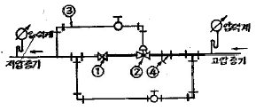
- ① 스톱밸브
- ② 감압밸브
- ③ 파이룻트관
- ④ 티이
(정답률: 82%)
43. 공기조화 배관 설비 중 냉수코일을 통과하는 일반적인 설비 풍속으로 가장 적당한 것은?
- 2 ~ 3m/s
- 4 ~ 5m/s
- 6 ~ 7m/s
- 8 ~ 10m/s
(정답률: 88%)
44. 경질 염화비닐관의 특성으로 옳지 않은 것은?
- 급탕관, 증기관으로 사용하는 것은 적합하지 않다.
- 다른 관에 비해 관내 마찰손실이 커서 불리하다.
- 온도의 상승에 따라 인장강도는 떨어진다.
- 충격에 약하며 열팽창률은 철의 약 7~ 8배가 된다.
(정답률: 74%)
45. 보온피복 재료로 적당하지 않은 것은?
- 우모펠트, 코르크
- 유리섬유, 기포성수지
- 탄산마그네슘, 규산칼슘
- 광명단, 에폭시수지
(정답률: 78%)
46. 다음 중 보온, 보냉이 필요한 배관은?
- 천정속의 냉. 온수배관
- 지중 매설된 급수관
- 방열기 주위 배관
- 공기빼기 및 물뻬기 밸브 이후의 배관
(정답률: 75%)
47. 동관용 공구에 대한 설명 중 틀린 것은?
- 튜브커터 : 동관 절단용
- 익스팬더 : 동관의 압축 접합용
- 튜브벤더 : 동관 굽힘용
- 사이징 툴 : 동관의 끝부분을 원형으로 성형
(정답률: 79%)
48. 수격작용 방지법에 관한 설명 중 부적합한 것은?
- 수전류 가까이에 공기실을 설치한다.
- 관내 유속을 느리게 한다.
- 관의 지름을 크게 한다.
- 밸브의 개폐를 신속히 한다.
(정답률: 85%)
49. 강관의 일반적인 접합방법에 해당되지 않는 것은?
- 나사 접합
- 플렌지 접합
- 압축 접합
- 용접 접합
(정답률: 84%)
50. 패널난방(panel heating)은 열의 전달방법 중 주로 어느것을 이용한 것인가?
- 전도
- 대류
- 복사
- 전파
(정답률: 85%)
51. 공기조화 설비의 구성과 거리가 먼 것은?
- 냉동기 설비
- 보일러 실내기기 설비
- 위생기구 설비
- 송풍기, 공조기 설비
(정답률: 85%)
52. LP가스의 주성분으로 맞는 것은?
- 프로판(C3H8)과 부틸렌(C4H8)
- 프로판(C3H8)과 부탄(C4H10)
- 프로필렌(C3H6)과 부틸렌(C4H8)
- 프로필렌(C3H6)과 부탄(C4H10)
(정답률: 87%)
53. 증기보일러에서 환수방법을 진공환수 방법으로 할 때 설명으로 맞는 것은?
- 증기주관은 선하향 구배로 한다.
- 환수관은 습식 환수관을 사용한다.
- 리프트 피팅의 1단 흡상고는 2m로 한다.
- 리프트 피팅은 펌프부근에 2개이상 설치한다.
(정답률: 67%)
54. 통기관의 관경을 정할 때 기본 원칙으로 틀린 것은?
- 결합통기관은 배수 수직관과 통기수직관 중 관경이 작은 쪽의 관경이상으로 한다.
- 신정통기관의 관경은 그것에 접속하는 배수수직관 관경의1/2 이상으로 한다.
- 도피통기관의 관경은 그것에 접속하는 배수수평지관 관경의 1/2 이상으로 한다.
- 각개통기관의 관경은 그것에 접속하는 배수수평지관 관경의 1/2 이상으로 한다.
(정답률: 58%)
55. 배관의 신축 이음 중 고압에 잘 견디며 고온고압의 옥괴 배관 신축이음쇠로 가장 좋은 것은?
- 루프형 신축 이음쇠
- 슬리브형 신축 이음쇠
- 벨로스형 신축 이음쇠
- 스위블형 신축 이음쇠
(정답률: 78%)
56. 온수 배관에 관한 설명 중 틀린 것은?
- 배관재료는 내열성을 고려해야 한다.
- 온수보일러의 팽창관에는 슬루스 밸브를 설치한다.
- 공기가 고일 염려가 있는 곳에는 공기 배출밸브를 설치한다.
- 배관의 지지는 처짐이 생기지 않도록 한다.
(정답률: 79%)
57. 클린룸(clean room)의 실내 기류방식이 아닌 것은?
- 수직수평 정류방식
- 수직 정류방식
- 수평 정류방식
- 비 정류방식
(정답률: 66%)
58. S트랩에서 잘 일어나며 관내에 배수가 가득차서 흐를 경우 발생하는 봉수 파괴 현상은?
- 자기 사이펀작용
- 분출작용
- 모세관현상
- 증발작용
(정답률: 77%)
59. 급탕설비 중에서 증기 사이렌서(steam silencer)를 필요로 하는 방식은?
- 순간 급탕기
- 저탕식 급탕기
- 간접가열 급탕기
- 기수 혼합 급탕기
(정답률: 70%)
60. 정압기 설치시공 상 주의 사항으로 틀린 것은?
- 출구에는 가스차단장치를 설치할 것
- 출구에는 압력이상 상승방지장치를 설치할 것
- 출구에는 경보장치 및 불순물 제거장치를 설치할 것
- 출구에는 압력 특정장치를 설치할 것
(정답률: 71%)
4과목: 전기제어공학
61. 자동제어계에서 각 요소를 블럭선도로 표시할 때 각 요소는 전달함수로 표시한다. 신호의 전달경로는 무엇으로 표현하는가?
- 접점
- 점선
- 화살표
- 스위치
(정답률: 87%)
62. 400[V] 이상인 저압전로의 절연저항값은 몇 [MΩ] 이상이어야 하는가?
- 0.1
- 0.2
- 0.3
- 0.4
(정답률: 72%)
63. 그림과 같은 유접점 회로를 간단히 한 회로는?
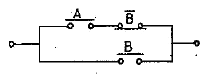
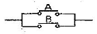
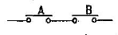
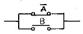
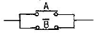
(정답률: 73%)
64. 자동제어에서 제어동작의 특징 중 정상편차가 없는 것은?
- 2위치동작(사이클링이 있음)
- P 동작(사이틀링을 방지함)
- PI동작(뒤진 회로의 특성과 같음)
- PD동작(앞선 회로의 특성과 같음)
(정답률: 58%)
65. 그림과 같은 계전기 접점회로의 논리식으로 알맞은 것은?
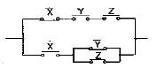
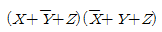
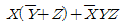
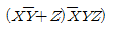
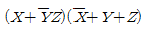
(정답률: 62%)
66. 교류의 실효치에 관하 설명 중 틀린 것은?
- 교류의 진폭은 실효치의 √2배이다.
- 전류나 전압의 한주기의 평균치가 실효치이다.
- 실효치 100V인 교류와 직류 100V로 같은 전등을 점등하면 그 밝기는 같다.
- 상용전원이 220V라는 것은 실효치를 의미한다.
(정답률: 64%)
67. 변압기의 무부하 전류에 대한 설명으로 틀린 것은?
- 철심에 지속을 만드는 전류로서 여자전류라고도 한다.
- 1차 단자간에 전압을 가했을 때 흐르는 전류이다.
- 전압보다 약 90도 뒤진 위상의 전류이다.
- 부하에 흐르는 전류가 0 이며, 전압이 존재하지 않는 무저항 전류이다.
(정답률: 58%)
68. 평형 상태인 브리지에서 L1 :L2 길이의 비율은 1 : 2 이다. R = 20[Ω]일 때 저항 X의 값은 몇 [Ω] 인가?
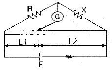
- 5
- 10
- 20
- 40
(정답률: 60%)
69. 어떤 제어계의 임펄스 응답이 sinwt일 때 계의 전달함수는?
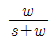
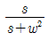
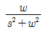
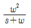
(정답률: 79%)
70. 자동제어에서 미리 정해 놓은 순서에 따라 제어의 각 단계가 순차적으로 진행되는 제어 방식은?
- 프로세스제어
- 시퀀스제어
- 서보제어
- 되먹임제어
(정답률: 85%)
71. 제어기기 중 조작기기에 대한 설명으로 옳은 것은?(오류 신고가 접수된 문제입니다. 반드시 정답과 해설을 확인하시기 바랍니다.)
- 전기식은 적응성이 대단히 넓고 특성의 변경은 어렵다.
- 공기식은 PID동작을 만들기 쉬우나 장거리 전송은 빠르다.
- 유압식은 관성이 적고 큰 출력을 얻기가 쉽다.
- 전기식에는 전자밸브, 직류 서보전동기, 클러치 등이 있다.
(정답률: 48%)
72. 그림과 같은 회로에서 ab간에 100[V]를 가했을 때 cd사이에 나타나는 전압은 몇 [V] 인가?
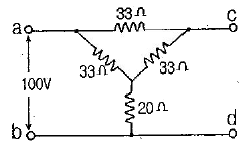
- 43.8
- 53.8
- 63.8
- 73.8
(정답률: 36%)
73. 변압기의 용도가 아닌 것은?
- 전압의 변환
- 임피던스의 변환
- 전류의 변환
- 주파수의 변환
(정답률: 75%)
74. 그림은 피드백 제어계의 일부이다. 출력 Y는?
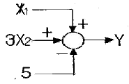
- X1+3X2-5
- X1+3X2+5
- X1ㆍ3X2ㆍ(-5)
- X1ㆍ3X2ㆍ5
(정답률: 64%)
75. 워드 레오나드방식의 속도제어는 어느 제어에 속하는가?
- 직렬저항제어
- 계자제어
- 전압제어
- 직병렬제어
(정답률: 69%)
76. 전달함수
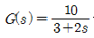
을 갖는 계에 w=2[rad/sec]인 정현파를 줄 때 이득은 약 몇 [dB]인가?- 2
- 3
- 4
- 6
(정답률: 45%)
77. 기전력1[V]의 정의는?
- 1C의 전기량이 이동할 때 1J의 일을 하는 두 점간의 전위치
- 1A의 전류가 이동할 때 1J의 일을 하는 두 점간의 전위차
- 1C의 전기량이 1초 동안에 이동하는 양
- 어떤 전기회로에 전압을 가하면 전류가 흐르고 이에 따른 전력이 발생하는 것
(정답률: 62%)
78. 1[W]와 크기가 같은 것은?
- 1[J]
- 1[J/sec]
- 1[cal]
- 1[cal/sec]
(정답률: 75%)
79. 전압 v=125sin377t[V]를 인가하여 전류 i=50cos377t[A]가 흘렀다면 이것은 어떤 소자에 전류를 흘린 것인가?
- 저항
- 저항과 사이리스터
- 콘덴서
- 인덕터
(정답률: 68%)
80. 프로세스제어에 대한 설명으로 옳은 것은?
- 공업공정의 상태량을 제어량으로 하는 제어를 말한다.
- 생산된 정기를 각 수용가에 배전하는 것도 프로세스 제어의 일종이다.
- 회전수, 방위, 전압과 같은 제어량이 일정 시간안에 목표값에 도달되는 제어이다.
- 임의로 변화하는 목표값을 추정하는 제어의 일종이다.
(정답률: 68%)